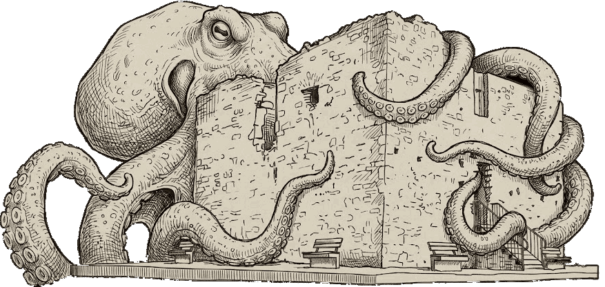
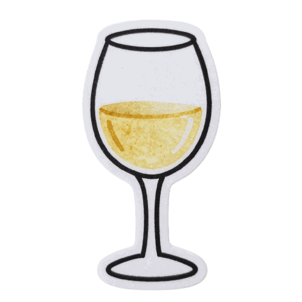
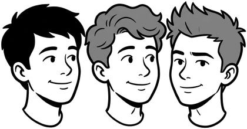

Livemusik · Foodtruck · Freier Eintritt
SeeblickSounds &Spritzer
der Sundowner am Tabor


Schülercrew
Unterstützer & Partner

Wir sind 3 Schüler der Akademie der Wirtschaft Neusiedl am See und verwirklichen im Rahmen unserer Diplomarbeit unsere Wunschveranstaltung: ein Abend mit Freunden an einem der schönsten Orte unserer Stadt. Musik von unserer Lieblingsband, kulinarische Schmankerl aus Neusiedl und lässige Sonnenuntergangs-Stimmung bei fairen Preisen. Offen für alle, die kommen wollen. Wir danken der Stadtgemeinde Neusiedl am See, Joe's Pub und allen Unterstützern, die diesen Abend möglich machen.
Wir hoffen, ihr kommt vorbei! Die Freunde des SunDowners,
Laurens, Alex & Janik